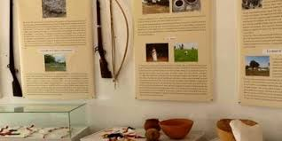

ile du saloum l ile du saloumLe Sine Saloum est une région naturelle qui se trouve au Nord de la Gambie et au sud de la Petite-Côte au Sénégal. Sa superficie est de 180 000 hectares. C'est dans cette région naturelle que se trouve le Parc national du delta du Saloumn
Les lieux touristiques incontournables au Bora-Bora
- Le Musée Royal de Diakhao Sine.
- Le Parc National du Delta du Saloum.
Inauguré en juin dernier, l’écomusée de Diakhao est l’une des plates-formes de sauvegarde et de valorisation du patrimoine matériel et immatériel du royaume du Sine. Il occupe l’espace historique de Keur Thioupane, site qui servait de résidence aux linguères..
Le parc national du delta du Saloum (PNDS) est l'un des six parcs nationaux du Sénégal — le second après celui du Niokolo-Koba, avec une superficie de 76 000 hectares. Le delta a été inscrit au patrimoine mondial en 20111,2 ainsi qu'au titre de réserve de biosphère en 19803 par l'Unesco et en tant que site Ramsar en 19844 pour l'importance de ses zones humides.
.jpeg)